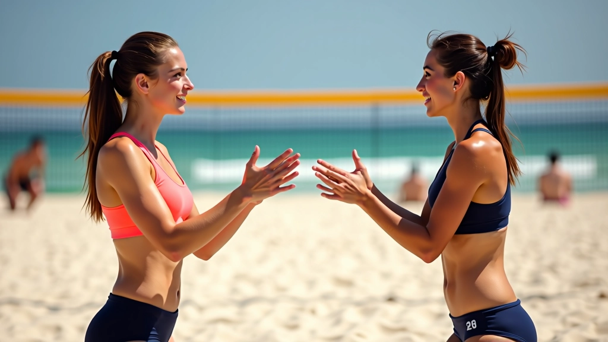
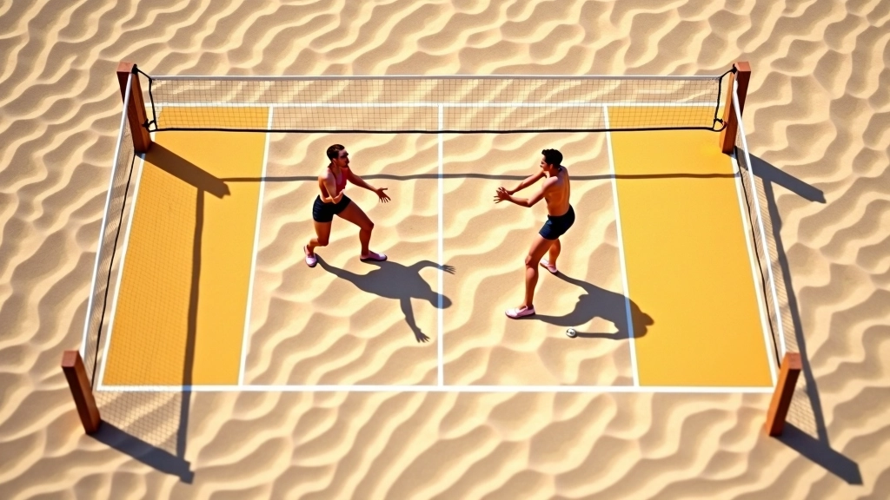
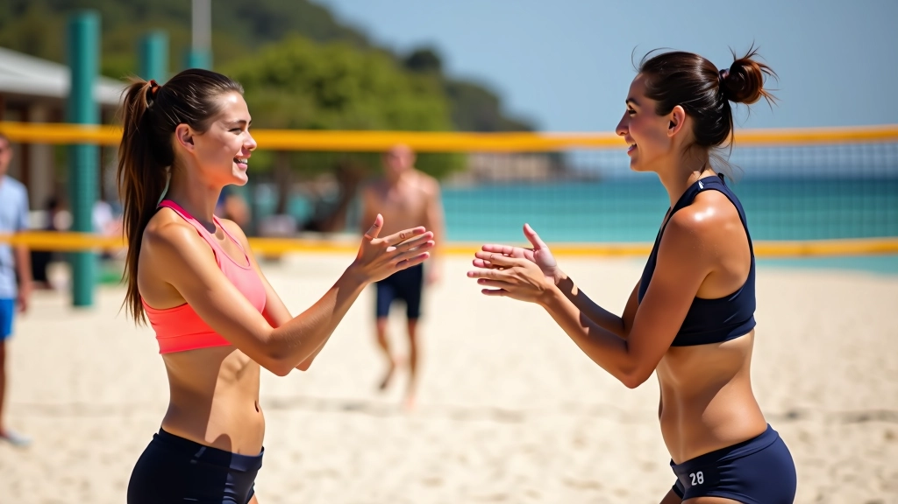

إشارات الدفاع والحماية
كيفية استخدام الإشارات للتنسيق بين الدفاعين وحماية شريكك من الضربات القوية

لماذا إشارات الدفاع مهمة جداً؟
في كرة الطائرة الشاطئية، الدفاع ليس عملاً فردياً. أنت لست وحدك على الملعب — شريكك يقف بجانبك، وكلاكما بحاجة إلى فهم بعضكما البعض بسرعة. الكرة تأتي بسرعة، والوقت محدود. لا يمكنك الصراخ والشرح — تحتاج إلى إشارات واضحة وسريعة.
الإشارات الدفاعية الجيدة تعني فرق بين حفظ النقطة وخسارتها. عندما تعرف شريكك بالضبط أي منطقة أنت تغطيها، يمكنه التركيز على منطقته. لا توجد فجوات، لا التباس، لا نقاط مفقودة بسبب عدم التنسيق.

تقسيم المناطق الدفاعية
الملعب ينقسم إلى مناطق واضحة. كل لاعب مسؤول عن منطقته الخاصة، وتحتاج إلى أن تعرف شريكك أين ستركز دفاعك. المناطق الأساسية هي: المنطقة الأمامية (بالقرب من الشبكة)، المنطقة الوسطية، والمنطقة الخلفية (عند خط النهاية).
الدفاع الأمامي
يغطي الضربات القريبة من الشبكة. يتطلب حركة سريعة وانتباهاً عالياً. شريكك يحتاج أن يعرف أنك هنا.
الدفاع الوسطي
يغطي المنطقة الوسطية من الملعب. هنا تحتاج إلى التوازن بين الأمام والخلف. أكثر المناطق شيوعاً للضربات.
الدفاع الخلفي
يغطي المنطقة خلف خط الهجوم. مهم جداً للكرات العالية والضربات البعيدة. يتطلب حركة سريعة للخلف.

ملاحظة تعليمية
هذا المحتوى مقدم لأغراض تعليمية وإعلامية. التقنيات والإشارات الموصوفة هنا تعتمد على أساليب شائعة في لعبة كرة الطائرة الشاطئية. الممارسة الفعلية مع مدرب متخصص مهمة لتطوير مهاراتك بشكل صحيح وآمن.
الإشارات الدفاعية الأساسية
هناك خمس إشارات أساسية تحتاج كل فريق إلى إتقانها. كل إشارة توضح نيتك الدفاعية وتساعد شريكك على التحضير.
إشارة "أنا هنا"
رفع يدك بوضوح نحو الشبكة. تعني أنك ستدافع عن المنطقة الأمامية والضربات القريبة. شريكك يعرف أنه يمكنه التركيز على الخلف.
إشارة "أنت الخلف"
التلويح بيدك نحو الخط الخلفي. تعني أنك ستتحرك للخلف وتغطي الكرات البعيدة. شريكك يتقدم قليلاً.
إشارة "غطاء مزدوج"
كلا اليدين معاً. تعني أنكما ستغطيان نفس المنطقة معاً — غالباً ضد ضربة قوية جداً متوقعة.
إشارة "الزاوية"
تشير بإصبعك نحو الزاوية. تعني أن الضربة ستأتي من هناك. شريكك يتحرك لمحاصرة تلك الزاوية.
إشارة "استعد"
تربت على كتفك أو تلويحة سريعة. تعني أن الكرة قادمة — انتبه، استعد للحركة السريعة.
التوقيت والتنسيق بين اللاعبين
التوقيت هو كل شيء. الإشارة تأتي قبل أن تضرب الكرة الخصم — ليس بعدها. عندما ترى الخصم يحضر للضربة، هذا هو وقتك. رفع يدك، أعط الإشارة، دع شريكك يعرف.
الوقت المثالي للإشارة هو عندما ترى الكرة في يد الخصم. هناك ثانية أو ثانيتان فقط قبل الضربة. تحتاج أن تكون سريعاً، واضحاً، وحازماً. لا تتردد — شريكك يحتاج إلى الثقة.
راقب الكرة وليس وجه الخصم. عندما ترى الكرة تصعد للضربة، ابدأ بالإشارة.
اجعل إشارتك مرئية لشريكك دائماً. لا تخفيها خلف جسدك أو تشير برفق.
تحدث مع شريكك — أضف صرخة قصيرة مثل "يسار" أو "خلف" مع الإشارة.
لا تنسَ أن تتحرك. الإشارة تخبر شريكك، لكنك أنت تحتاج إلى التحرك إلى موقعك أيضاً.
تمارين لتحسين التنسيق الدفاعي
التمارين هي السر. لا تتوقع أن تصبح جيداً فقط بالتحدث عن الإشارات. تحتاج إلى التدريب المنتظم والتكرار. إليك ثلاث تمارين بسيطة يمكنك ممارستها مع شريكك.
التمرين الأول: إشارات بدون كرة
قفا أمام بعضكما. يأخذ أحدكما دور الخصم (بدون كرة فعلاً). الآخر يعطي الإشارات بناءً على الحركات الوهمية. مارس هذا لمدة 5 دقائق. الهدف: الإشارات السريعة والواضحة. افعل هذا 3 مرات في الأسبوع.
التمرين الثاني: الإشارات مع التحرك
الآن أضيفوا الحركة. شريكك يركض نحو الشبكة، أنت تتحرك للجانب. أعط الإشارة أثناء الحركة. هذا أصعب من الوقوف ساكناً. لا تقلق إذا استغرقت بعض الوقت. المفتاح هو التكرار المنتظم.
التمرين الثالث: مع كرة فعلية
الآن الشيء الحقيقي. أحدكما يضرب الكرة بقوة متوسطة، الآخر يعطي الإشارات ويدافع. ابدأ بسرعة منخفضة. زد السرعة تدريجياً. افعل 20 محاولة على الأقل.

ملخص النقاط الأساسية
إشارات الدفاع ليست معقدة — لكنها مهمة. تحتاج إلى خمس إشارات أساسية فقط، توقيت جيد، وممارسة منتظمة. عندما تتقن هذه المهارات مع شريكك، ستلاحظ الفرق فوراً. الدفاع سيصبح أسهل، والثقة ستزداد.
الإشارات الواضحة تعني تنسيقاً أفضل بين اللاعبين
التوقيت المثالي هو قبل ضربة الخصم، لا بعدها
التمرين المنتظم يجعل الإشارات عادية وتلقائية
الثقة بين اللاعبين تبدأ بالتواصل الواضح
ابدأ بالتمارين البسيطة، كرر بانتظام، وكن صبوراً مع نفسك. في غضون أسابيع قليلة، ستصبح هذه الإشارات جزءاً طبيعياً من لعبتك.

فريق إشارات الشاطئ التحريري
فريق تحريري
كتبه فريق إشارات الشاطئ التحريري، متخصص في تقديم إرشادات عملية وسهلة المتابعة.
مقالات ذات صلة

الإشارات الأساسية للمبتدئين
الإشارات الخمس الأساسية التي يحتاج كل لاعب جديد إلى تعلمها قبل الدخول إلى الملعب...

الإشارات المتقدمة والخطط
إشارات معقدة تستخدمها الفرق المتقدمة للتنسيق بين الهجوم والدفاع. تتضمن تغييرات ت...

الممارسة والتطبيق العملي
تمارين عملية لتطوير سرعة استجابتك للإشارات. تدريبات فريقية تساعدك على التعود على...